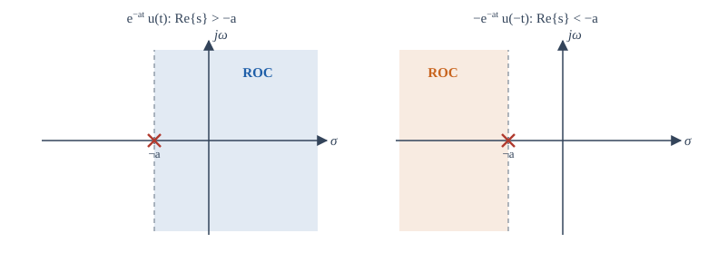
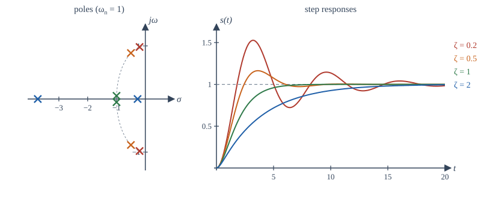

Chapter 10: The Laplace Transform¶
Exponentials of every kind, regions of convergence, transfer functions, and differential equations with initial conditions
Learning outcomes
After this chapter you should be able to:
- define the bilateral Laplace transform, relate it to the Fourier transform, and find the region of convergence (ROC) of a transform;
- draw pole-zero plots and state the properties of the ROC;
- invert rational transforms by partial fractions, including repeated and complex poles, using the ROC to choose each term;
- use the properties of the transform, including the initial and final value theorems;
- find the transfer function of a system, and decide causality and stability from its poles and ROC;
- solve linear differential equations with initial conditions using the unilateral transform;
- describe second-order systems by natural frequency and damping ratio, and predict overshoot.
10.1 Beyond the Fourier transform¶
The Fourier transform analyses signals into pure oscillations \(e^{j\omega t}\). It fails for signals that grow, such as \(e^{t}u(t)\), and for unstable systems, whose impulse responses grow, because the Fourier integral does not converge. Yet growing signals matter: an engineer must be able to analyse an unstable system in order to stabilise it. The cure is to allow the exponentials of Section 4.8 in full generality, \(e^{st}\) with complex \(s = \sigma + j\omega\).
The (bilateral) Laplace transform of \(x(t)\) is
Writing \(e^{-st} = e^{-\sigma t}e^{-j\omega t}\) shows what it does:
The Laplace transform is the Fourier transform of \(x(t)\) multiplied by a real exponential \(e^{-\sigma t}\). A suitable \(\sigma\) tames a growing signal (for \(e^{t}u(t)\), any \(\sigma > 1\) makes \(e^{(1-\sigma)t}u(t)\) decay), so the transform exists for many signals that have no Fourier transform. On the imaginary axis \(\sigma = 0\), the Laplace transform becomes the Fourier transform: \(X(s)|_{s = j\omega} = X(j\omega)\), which explains the notation of Chapter 6.
The variable \(s\) lives in the complex s-plane, with \(\sigma\) on the horizontal axis and \(\omega\) on the vertical axis. The inverse transform is a contour integral in this plane,
taken along a vertical line inside the region of convergence. In practice we almost never evaluate it: for the rational transforms that arise from circuits and mechanical systems, partial fractions and a table suffice.
10.2 The region of convergence¶
Example 10.1 A right-sided exponential
For \(x(t) = e^{-at}u(t)\) (with \(a\) real or complex):
provided the upper limit vanishes, which needs \(\mathrm{Re}\{s + a\} > 0\), that is \(\mathrm{Re}\{s\} > -\mathrm{Re}\{a\}\). So \(e^{-at}u(t) \leftrightarrow \frac{1}{s+a}\) with ROC \(\mathrm{Re}\{s\} > -a\) (for real \(a\)). The ROC is the half-plane to the right of the point \(s = -a\).
Example 10.2 A left-sided exponential
For \(x(t) = -e^{-at}u(-t)\):
provided the lower limit vanishes, which needs \(\mathrm{Re}\{s\} < -a\). The ROC is the half-plane to the left of \(s = -a\).
The two examples give the same algebraic expression for two different signals. The expression alone does not determine the signal: the ROC is part of the transform. Figure 10.1 shows the two regions.

The ROC has a simple structure, which follows from the observation that convergence depends only on \(\sigma = \mathrm{Re}\{s\}\):
- The ROC consists of vertical strips in the s-plane (a strip, a half-plane, or the whole plane).
- For a rational transform, the ROC contains no poles, and it is bounded by poles or extends to infinity.
- If \(x\) is of finite duration (and absolutely integrable), the ROC is the entire s-plane.
- If \(x\) is right-sided, the ROC is a right half-plane: to the right of the rightmost pole.
- If \(x\) is left-sided, the ROC is a left half-plane: to the left of the leftmost pole.
- If \(x\) is two-sided, the ROC is a strip between two poles, or empty.
- The Fourier transform of \(x\) exists (as a function) if and only if the ROC includes the \(j\omega\) axis.
Example 10.3 A two-sided signal
Find the transform of \(x(t) = e^{-2t}u(t) + e^{3t}u(-t)\).
The first term gives \(\frac{1}{s + 2}\) with \(\mathrm{Re}\{s\} > -2\). The second is \(-(-e^{3t}u(-t))\), so by Example 10.2 with \(a = -3\) it gives \(-\frac{1}{s - 3}\) with \(\mathrm{Re}\{s\} < 3\). Both must converge, so the ROC is the strip \(-2 < \mathrm{Re}\{s\} < 3\), and
The strip contains the \(j\omega\) axis, so this signal (which decays in both directions) has a Fourier transform, \(X(j\omega)\).
Poles and zeros¶
Most transforms in practice are rational: \(X(s) = N(s)/D(s)\), a ratio of polynomials. The roots of \(N\) are the zeros (where \(X = 0\)), and the roots of \(D\) are the poles (where \(X\) is infinite). A pole-zero plot marks poles with crosses and zeros with circles. Apart from a constant gain factor, the poles, the zeros and the ROC determine the transform completely.
10.3 Transform pairs and properties¶
| \(x(t)\) | \(X(s)\) | ROC |
|---|---|---|
| \(\delta(t)\) | \(1\) | all \(s\) |
| \(u(t)\) | \(\dfrac{1}{s}\) | \(\mathrm{Re}\{s\} > 0\) |
| \(-u(-t)\) | \(\dfrac{1}{s}\) | \(\mathrm{Re}\{s\} < 0\) |
| \(t^{n}u(t)/n!\) | \(\dfrac{1}{s^{n+1}}\) | \(\mathrm{Re}\{s\} > 0\) |
| \(e^{-at}u(t)\) | \(\dfrac{1}{s + a}\) | \(\mathrm{Re}\{s\} > -a\) |
| \(-e^{-at}u(-t)\) | \(\dfrac{1}{s + a}\) | \(\mathrm{Re}\{s\} < -a\) |
| \(t^{n}e^{-at}u(t)/n!\) | \(\dfrac{1}{(s + a)^{n+1}}\) | \(\mathrm{Re}\{s\} > -a\) |
| \(\cos(\omega_0 t)\,u(t)\) | \(\dfrac{s}{s^2 + \omega_0^2}\) | \(\mathrm{Re}\{s\} > 0\) |
| \(\sin(\omega_0 t)\,u(t)\) | \(\dfrac{\omega_0}{s^2 + \omega_0^2}\) | \(\mathrm{Re}\{s\} > 0\) |
| \(e^{-at}\cos(\omega_0 t)\,u(t)\) | \(\dfrac{s + a}{(s + a)^2 + \omega_0^2}\) | \(\mathrm{Re}\{s\} > -a\) |
| \(e^{-at}\sin(\omega_0 t)\,u(t)\) | \(\dfrac{\omega_0}{(s + a)^2 + \omega_0^2}\) | \(\mathrm{Re}\{s\} > -a\) |
Table 10.1. Laplace transform pairs.
| Property | Signal | Transform | ROC |
|---|---|---|---|
| Linearity | \(ax_1 + bx_2\) | \(aX_1(s) + bX_2(s)\) | at least \(R_1 \cap R_2\) |
| Time shift | \(x(t - t_0)\) | \(e^{-st_0}X(s)\) | \(R\) |
| Shift in \(s\) | \(e^{s_0t}x(t)\) | \(X(s - s_0)\) | \(R\) shifted by \(\mathrm{Re}\{s_0\}\) |
| Time scaling | \(x(at)\) | \(\frac{1}{\lvert a\rvert}X(s/a)\) | \(aR\) |
| Convolution | \(x_1 * x_2\) | \(X_1(s)X_2(s)\) | at least \(R_1 \cap R_2\) |
| Differentiation | \(\dfrac{dx}{dt}\) | \(sX(s)\) | at least \(R\) |
| Multiplication by \(t\) | \(t\,x(t)\) | \(-\dfrac{dX(s)}{ds}\) | \(R\) |
| Integration | \(\int_{-\infty}^{t}x(\tau)\,d\tau\) | \(\dfrac{X(s)}{s}\) | at least \(R \cap \{\mathrm{Re}\{s\} > 0\}\) |
Table 10.2. Properties of the bilateral Laplace transform.
Two theorems give quick checks for a signal that is zero for \(t < 0\) and contains no impulse at the origin:
- Initial value theorem: \(x(0^+) = \lim_{s\to\infty} sX(s)\).
- Final value theorem: \(\lim_{t\to\infty}x(t) = \lim_{s\to0} sX(s)\), valid only if the limit exists, which requires all poles of \(sX(s)\) to lie in the open left half-plane.
For example, \(X(s) = \frac{s + 4}{s(s + 2)}\) gives \(x(0^+) = \lim\frac{s + 4}{s + 2} = 1\) and \(x(\infty) = \frac{4}{2} = 2\). Applying the final value theorem to \(\frac{1}{s - 1}\) would give 0, but \(e^{t}u(t)\) grows: the pole at \(s = 1\) is in the right half-plane, so the theorem does not apply.
10.4 Inverting by partial fractions¶
To invert a rational \(X(s)\):
- If the degree of the numerator is not less than that of the denominator, divide first; the quotient gives impulses and their derivatives.
- Factor the denominator and expand \(X(s)\) into a sum of simple terms \(\frac{A}{s - p}\) (and \(\frac{A}{(s - p)^m}\) for repeated poles).
- Invert each term from the table, choosing the right-sided or left-sided version according to whether the ROC lies to the right or left of that pole.
For a simple pole \(p_i\) the coefficient is the residue \(A_i = (s - p_i)X(s)\big|_{s = p_i}\) (the "cover-up" rule).
Example 10.4 Distinct real poles
Invert \(X(s) = \dfrac{s + 3}{(s + 1)(s + 2)}\) with ROC \(\mathrm{Re}\{s\} > -1\).
\(A_1 = \dfrac{s + 3}{s + 2}\Big|_{s=-1} = 2\), \(A_2 = \dfrac{s + 3}{s + 1}\Big|_{s=-2} = -1\). So \(X(s) = \dfrac{2}{s + 1} - \dfrac{1}{s + 2}\).
The ROC lies to the right of both poles, so both terms are right-sided: \(x(t) = (2e^{-t} - e^{-2t})u(t)\).
If instead the ROC were \(-2 < \mathrm{Re}\{s\} < -1\), the pole at \(-1\) would be to the right of the ROC (left-sided term) and the pole at \(-2\) to its left (right-sided term): \(x(t) = -2e^{-t}u(-t) - e^{-2t}u(t)\).
Example 10.5 A repeated pole
Invert \(X(s) = \dfrac{1}{s(s + 1)^2}\), \(\mathrm{Re}\{s\} > 0\).
Write \(X = \dfrac{A}{s} + \dfrac{B}{s + 1} + \dfrac{C}{(s + 1)^2}\). Cover-up gives \(A = \dfrac{1}{(s+1)^2}\Big|_{0} = 1\) and \(C = \dfrac{1}{s}\Big|_{-1} = -1\). For \(B\), differentiate \((s+1)^2X = 1/s\) and evaluate at \(-1\): \(B = -\dfrac{1}{s^2}\Big|_{-1} = -1\). Hence \(x(t) = (1 - e^{-t} - te^{-t})u(t)\). Check with the initial value theorem: \(sX(s) \to 0\), and indeed \(x(0^+) = 1 - 1 - 0 = 0\).
Example 10.6 Complex poles
Invert \(X(s) = \dfrac{s + 1}{s^2 + 2s + 5}\), \(\mathrm{Re}\{s\} > -1\).
Complete the square: \(s^2 + 2s + 5 = (s + 1)^2 + 4\). Then \(X(s) = \dfrac{s + 1}{(s + 1)^2 + 2^2}\), which is in Table 10.1: \(x(t) = e^{-t}\cos(2t)\,u(t)\). The poles are at \(-1 \pm 2j\); their real part sets the decay rate and their imaginary part the frequency of oscillation. A numerator such as \(s + 3 = (s + 1) + 2\) would add \(e^{-t}\sin(2t)u(t)\).
10.5 Transfer functions¶
For an LTI system, convolution becomes multiplication: \(Y(s) = H(s)X(s)\), where the transfer function (or system function) \(H(s)\) is the Laplace transform of the impulse response. It is the eigenvalue of Section 4.8 for \(e^{st}\), and on the \(j\omega\) axis it is the frequency response.
Causality and stability from the ROC¶
- A system is causal if \(h(t) = 0\) for \(t < 0\). Then \(h\) is right-sided, and the ROC of \(H(s)\) is a right half-plane. For a rational \(H(s)\), causality means the ROC lies to the right of the rightmost pole.
- A system is BIBO stable if \(\int|h(t)|dt < \infty\), which holds if and only if the ROC includes the \(j\omega\) axis.
- Hence a causal system with rational \(H(s)\) is stable if and only if all its poles lie in the open left half-plane (\(\mathrm{Re}\{p\} < 0\)).
This last statement is the single most used fact in control engineering. Each pole \(p\) contributes a term \(e^{pt}u(t)\) to the impulse response, which decays if \(\mathrm{Re}\{p\} < 0\) and grows if \(\mathrm{Re}\{p\} > 0\); a pair of poles on the \(j\omega\) axis gives an oscillation that never dies out, which is not BIBO stable either (a sinusoidal input at that frequency produces an output that grows like \(t\)).
Systems described by differential equations¶
Applying the differentiation property to \(\sum_k a_k\frac{d^ky}{dt^k} = \sum_k b_k\frac{d^kx}{dt^k}\) gives
The equation fixes the poles and zeros but not the ROC; the condition of initial rest (causality) chooses the right half-plane.
Interconnections¶
Transfer functions combine by algebra: a series connection multiplies them, a parallel connection adds them, and a feedback connection with forward path \(G(s)\) and feedback path \(F(s)\) (subtracted at the input, as in Figure 3.1) gives
Proof: \(Y = G(X - FY)\), so \(Y(1 + GF) = GX\).
Example 10.7 Feedback moves poles
A motor with transfer function \(G(s) = \dfrac{1}{s(s + 2)}\) has a pole at the origin, so on its own it is not stable (a constant input makes its position ramp away). Place it in a unity-feedback loop (\(F = 1\)) with an amplifier of gain \(K\) in the forward path. The closed-loop transfer function is
For every \(K > 0\) both poles are in the left half-plane, so the closed loop is stable. For \(K = 5\) the poles are at \(-1 \pm 2j\). Feedback has moved the poles; choosing where to put them is the business of control design (Chapter 14).
10.6 The unilateral transform and initial conditions¶
Circuits and machines are usually switched on at \(t = 0\) with some energy already stored: a charged capacitor, a moving mass. For such problems we use the unilateral Laplace transform
which ignores \(t < 0\) (the lower limit \(0^-\) includes any impulse at the origin). For signals that are zero for \(t < 0\) it equals the bilateral transform, and its ROC is always a right half-plane, so it is seldom stated. Its great advantage is the differentiation property, which now carries the initial conditions:
Example 10.8 A first-order equation with an initial condition
Solve \(\dfrac{dy}{dt} + 2y = 4u(t)\) with \(y(0^-) = 1\).
Transform: \(s\mathcal{Y} - 1 + 2\mathcal{Y} = \dfrac{4}{s}\). Solve: \(\mathcal{Y}(s) = \dfrac{1}{s + 2} + \dfrac{4}{s(s+2)} = \dfrac{s + 4}{s(s + 2)} = \dfrac{2}{s} - \dfrac{1}{s + 2}\).
So \(y(t) = 2 - e^{-2t}\) for \(t \ge 0\). It starts at 1, as required, and settles at 2, as the final value theorem predicts. The first term of \(\mathcal{Y}\) before combining, \(\frac{1}{s+2}\), is the zero-input response \(e^{-2t}\); the second, \(\frac{4}{s(s+2)}\), is the zero-state response \(2(1 - e^{-2t})\) (Section 3.8).
Example 10.9 A second-order step response
Find the step response of \(y'' + 3y' + 2y = x(t)\) from rest.
\((s^2 + 3s + 2)\mathcal{Y} = \frac{1}{s}\), so \(\mathcal{Y} = \dfrac{1}{s(s + 1)(s + 2)} = \dfrac{1/2}{s} - \dfrac{1}{s + 1} + \dfrac{1/2}{s + 2}\), giving \(y(t) = \frac12 - e^{-t} + \frac12e^{-2t}\) for \(t \ge 0\).
10.7 Second-order systems¶
Many physical systems (a mass on a spring with damping, an RLC circuit, a motor under feedback) are well described by the standard second-order transfer function
where \(\omega_n > 0\) is the natural frequency and \(\zeta \ge 0\) the damping ratio. The DC gain is \(H(0) = 1\). The poles are
- Underdamped, \(0 < \zeta < 1\): complex poles \(-\zeta\omega_n \pm j\omega_d\) with \(\omega_d = \omega_n\sqrt{1 - \zeta^2}\). They lie on a circle of radius \(\omega_n\). The step response overshoots and rings at \(\omega_d\).
- Critically damped, \(\zeta = 1\): a double real pole at \(-\omega_n\); the fastest response without overshoot.
- Overdamped, \(\zeta > 1\): two real poles; a sluggish response without overshoot, dominated by the pole nearer the origin.
- Undamped, \(\zeta = 0\): poles on the \(j\omega\) axis; a sustained oscillation.

For the underdamped case, the step response is \(s(t) = 1 - e^{-\zeta\omega_nt}\left(\cos\omega_dt + \frac{\zeta}{\sqrt{1-\zeta^2}}\sin\omega_dt\right)\), and two numbers summarise it:
The overshoot depends only on \(\zeta\): about 53% for \(\zeta = 0.2\), 16% for \(\zeta = 0.5\), 4.3% for \(\zeta = 0.707\). The closed loop of Example 10.7 with \(K = 5\) has \(\omega_n = \sqrt5\) and \(\zeta = 1/\sqrt5 = 0.447\), so it should overshoot by about 21%, peaking at \(t_p = \pi/2\) s. The program in the next section confirms both numbers by simulation.
10.8 Partial fractions and simulation in NumPy¶
NumPy finds polynomial roots, which is all that is needed for partial fractions with distinct poles: the residue at a simple pole \(p\) of \(N(s)/D(s)\) is \(N(p)/D'(p)\). The program below reproduces Examples 10.4 and 10.9, and then simulates the closed loop of Example 10.7 with a fourth-order Runge-Kutta method to check the overshoot formula.
import numpy as np
def residues(num, den):
"""Partial-fraction residues of num(s)/den(s) for distinct poles (deg num < deg den)."""
poles = np.roots(den)
dden = np.polyder(den)
return [(p, np.polyval(num, p) / np.polyval(dden, p)) for p in poles]
# X(s) = (s + 3) / ((s + 1)(s + 2))
for p, r in residues([1, 3], np.polymul([1, 1], [1, 2])):
print(f"pole {p.real:+.0f}: residue {r.real:+.3f}")
# Y(s) = 1 / (s (s + 1)(s + 2)), the step response of y'' + 3y' + 2y = x
den = np.polymul([1, 0], np.polymul([1, 1], [1, 2]))
print([f"{p.real:+.0f}: {r.real:+.3f}" for p, r in residues([1], den)])
# Closed loop K / (s^2 + 2s + K) with K = 5: poles, damping, and step-response overshoot
K = 5.0
print("closed-loop poles:", np.roots([1, 2, K]))
wn, zeta = np.sqrt(K), 1 / np.sqrt(K)
print(f"wn = {wn:.3f} rad/s, zeta = {zeta:.3f}, predicted overshoot = {np.exp(-np.pi * zeta / np.sqrt(1 - zeta**2)):.3f}")
# simulate y'' + 2y' + K y = K u(t) with a fourth-order Runge-Kutta method
def f(state):
y, v = state
return np.array([v, K * 1.0 - 2 * v - K * y])
h, state, ys = 1e-3, np.array([0.0, 0.0]), []
for _ in range(8000):
k1 = f(state); k2 = f(state + h / 2 * k1); k3 = f(state + h / 2 * k2); k4 = f(state + h * k3)
state = state + h / 6 * (k1 + 2 * k2 + 2 * k3 + k4)
ys.append(state[0])
ys = np.array(ys)
print(f"simulated peak = {ys.max():.3f} at t = {(ys.argmax() + 1) * h:.3f} s, final value = {ys[-1]:.3f}")
print(f"predicted peak time pi / (wn sqrt(1 - zeta^2)) = {np.pi / (wn * np.sqrt(1 - zeta**2)):.3f} s")
pole -2: residue -1.000
pole -1: residue +2.000
['-2: +0.500', '-1: -1.000', '+0: +0.500']
closed-loop poles: [-1.+2.j -1.-2.j]
wn = 2.236 rad/s, zeta = 0.447, predicted overshoot = 0.208
simulated peak = 1.208 at t = 1.571 s, final value = 1.000
predicted peak time pi / (wn sqrt(1 - zeta^2)) = 1.571 s
The residues match the hand calculations, and the simulated peak of 1.208 at 1.571 s agrees with the overshoot of 20.8% and the peak time \(\pi/2\) predicted from \(\zeta\) and \(\omega_n\). (SciPy's scipy.signal.residue and scipy.signal.step do these jobs in one call, including repeated poles.)
10.9 Summary¶
Summary
- \(X(s) = \int x(t)e^{-st}dt\) is the Fourier transform of \(x(t)e^{-\sigma t}\); on the \(j\omega\) axis it is the Fourier transform.
- The ROC is part of the transform: \(e^{-at}u(t)\) and \(-e^{-at}u(-t)\) share the formula \(\frac{1}{s+a}\). ROCs are vertical strips bounded by poles: right half-planes for right-sided signals, left half-planes for left-sided, strips for two-sided.
- Invert rational transforms by partial fractions; the ROC decides whether each pole gives a right-sided or left-sided term.
- Convolution becomes multiplication, differentiation becomes multiplication by \(s\), a delay becomes \(e^{-st_0}\). Initial and final value theorems check answers (the latter only for stable \(sX(s)\)).
- \(H(s)\) is causal if its ROC is right of the rightmost pole, and stable if the ROC contains the \(j\omega\) axis. Causal and stable means all poles in the open left half-plane. Feedback gives \(G/(1 + GF)\) and moves poles.
- The unilateral transform brings initial conditions into \(sX(s) - x(0^-)\), solving differential equations by algebra.
- Second-order systems are characterised by \(\omega_n\) and \(\zeta\); overshoot is \(e^{-\pi\zeta/\sqrt{1-\zeta^2}}\).
10.10 Exercises¶
Exercise 10.1
Find the Laplace transform and ROC of \(x(t) = e^{-3t}u(t) - e^{-t}u(t)\).
Answer
\(\dfrac{1}{s + 3} - \dfrac{1}{s + 1} = \dfrac{-2}{(s + 1)(s + 3)}\), ROC \(\mathrm{Re}\{s\} > -1\) (to the right of both poles).
Exercise 10.2
Find the inverse transform of \(X(s) = \dfrac{2s + 5}{s^2 + 5s + 6}\) with ROC \(\mathrm{Re}\{s\} > -2\).
Answer
Poles at \(-2\) and \(-3\). Residues: at \(-2\), \(\frac{1}{1} = 1\); at \(-3\), \(\frac{-1}{-1} = 1\). So \(x(t) = (e^{-2t} + e^{-3t})u(t)\).
Exercise 10.3
The transform \(X(s) = \dfrac{1}{(s + 1)(s - 2)}\) has three possible ROCs. List them and say which gives a signal with a Fourier transform.
Answer
\(\mathrm{Re}\{s\} > 2\) (right-sided), \(\mathrm{Re}\{s\} < -1\) (left-sided), and \(-1 < \mathrm{Re}\{s\} < 2\) (two-sided). Only the strip contains the \(j\omega\) axis, so only the two-sided signal has a Fourier transform.
Exercise 10.4
Use the initial and final value theorems on \(X(s) = \dfrac{10(s + 1)}{s(s + 5)}\).
Answer
\(x(0^+) = \lim_{s\to\infty}\frac{10(s+1)}{s+5} = 10\). \(x(\infty) = \lim_{s\to0}\frac{10(s+1)}{s+5} = 2\) (valid: the only pole of \(sX\) is at \(-5\)).
Exercise 10.5
A causal system has \(H(s) = \dfrac{s - 1}{(s + 2)(s^2 + 4)}\). Is it stable?
Answer
No. The poles at \(\pm 2j\) lie on the \(j\omega\) axis, so the ROC \(\mathrm{Re}\{s\} > 0\) does not include the axis. (The zero in the right half-plane does not affect stability.)
Exercise 10.6
Find the transfer function of \(y'' + 4y' + 3y = 2x' + x\) and its poles and zeros.
Answer
\(H(s) = \dfrac{2s + 1}{s^2 + 4s + 3} = \dfrac{2s + 1}{(s + 1)(s + 3)}\): zero at \(-\frac12\), poles at \(-1\) and \(-3\).
Exercise 10.7
Solve \(y' + y = 0\) with \(y(0^-) = 3\) using the unilateral transform.
Answer
\(s\mathcal{Y} - 3 + \mathcal{Y} = 0\), so \(\mathcal{Y} = \frac{3}{s+1}\) and \(y(t) = 3e^{-t}\) for \(t \ge 0\).
Exercise 10.8
A unity-feedback loop has forward path \(G(s) = \dfrac{K}{s + 1}\). Find the closed-loop pole and the value of \(K\) that places it at \(s = -10\).
Answer
\(H = \frac{K}{s + 1 + K}\), pole at \(-(1 + K)\). \(K = 9\) places it at \(-10\): feedback has made the system ten times faster.
Exercise 10.9
A system \(H(s) = \dfrac{25}{s^2 + 6s + 25}\) is driven by a unit step. Find \(\omega_n\), \(\zeta\), the percentage overshoot and the peak time.
Answer
\(\omega_n = 5\), \(2\zeta\omega_n = 6\) so \(\zeta = 0.6\). \(\omega_d = 5\sqrt{0.64} = 4\). Overshoot \(= 100e^{-0.6\pi/0.8} = 100e^{-2.356} \approx 9.5\%\). Peak time \(= \pi/4 \approx 0.785\) s.
Exercise 10.10
Find the transform of \(x(t) = \delta(t - 2) + u(t - 1)\).
Answer
\(e^{-2s} + \dfrac{e^{-s}}{s}\), ROC \(\mathrm{Re}\{s\} > 0\).
10.11 Quiz¶
Check your understanding of Chapter 10
Exercise 1
e^(−2t)u(t) and −e^(−2t)u(−t) have the same Laplace transform formula. What distinguishes them?
- the region of convergence
- the zeros
- the gain
- nothing: they are the same signal
Answer
the region of convergence
Exercise 2
A causal LTI system with a rational transfer function is stable if and only if
- all poles have negative real parts
- all zeros have negative real parts
- it has no zeros
- its DC gain is finite
Answer
all poles have negative real parts
Exercise 3
Use the final value theorem: what is the final value of x(t) if X(s) = 6/(s(s + 3))?
Answer
2
Exercise 4
The ROC of a right-sided signal is
- a right half-plane
- a left half-plane
- a strip
- the jω axis only
Answer
a right half-plane
Exercise 5
The closed-loop transfer function of a negative-feedback loop with forward path G and feedback path F is
- G/(1 + GF)
- G/(1 − GF)
- GF
- G + F
Answer
G/(1 + GF)
Exercise 6
What is the damping ratio ζ of H(s) = 16/(s² + 4s + 16)?
Answer
0.5 / 1/2
ωn = 4 and 2ζωn = 4, so ζ = 0.5.
Exercise 7
In the unilateral transform, dx/dt corresponds to sX(s) minus x(___).
Answer
0- / 0− / 0 minus